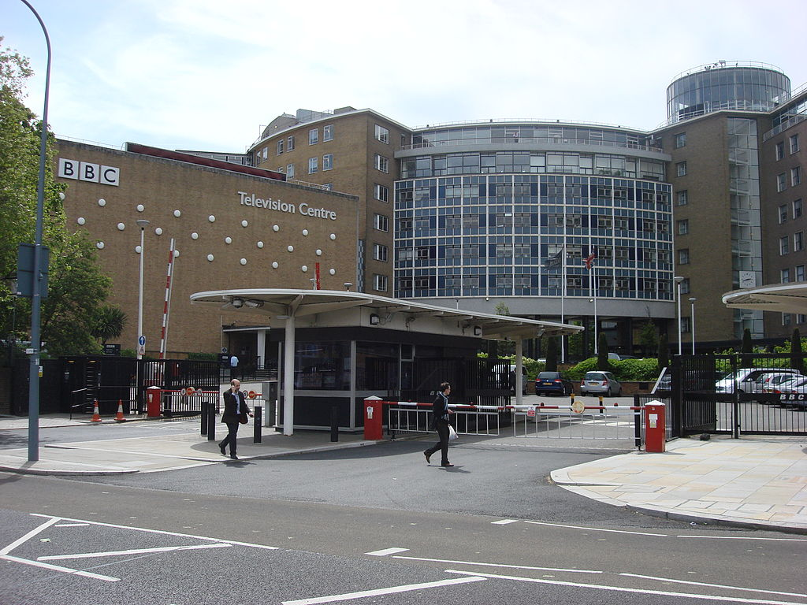
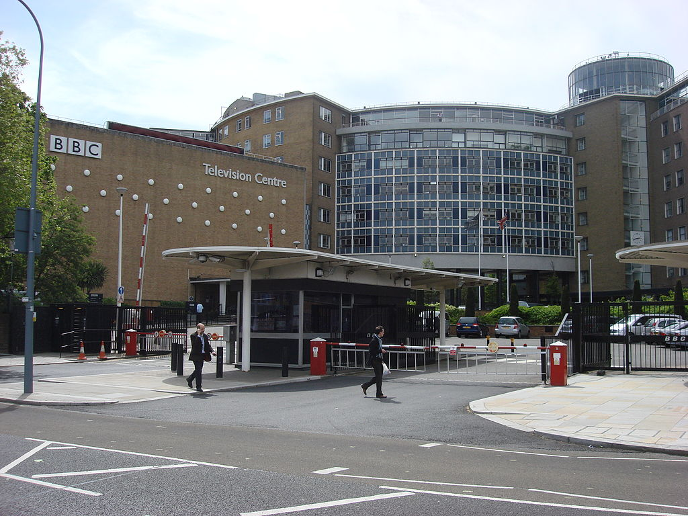

BBC News is an operational business division[1] of the British Broadcasting Corporation (BBC) responsible for the gathering and broadcasting of news and current affairs. The department is the world's largest broadcast news organisation and generates about 120 hours of radio and television output each day, as well as online news coverage.[2][3] The service maintains 50 foreign news bureaus with more than 250 correspondents around the world.[4] Fran Unsworth has been Director of News and Current Affairs since January 2018..
More About BBC
BBC newsreaders and journlists 
